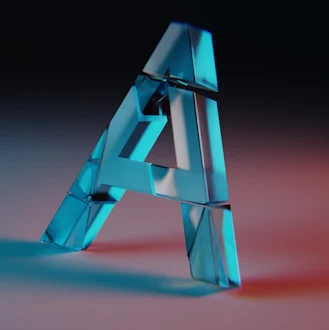
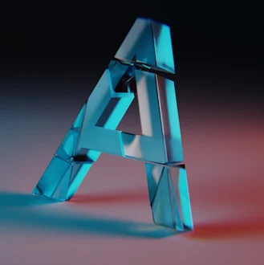

3D Mechanical Robot
This project was done using the 3D software 'Blender'. The core idea was to give life and personality to a simple object. This also allowed me to explore composition and lighting.

 
